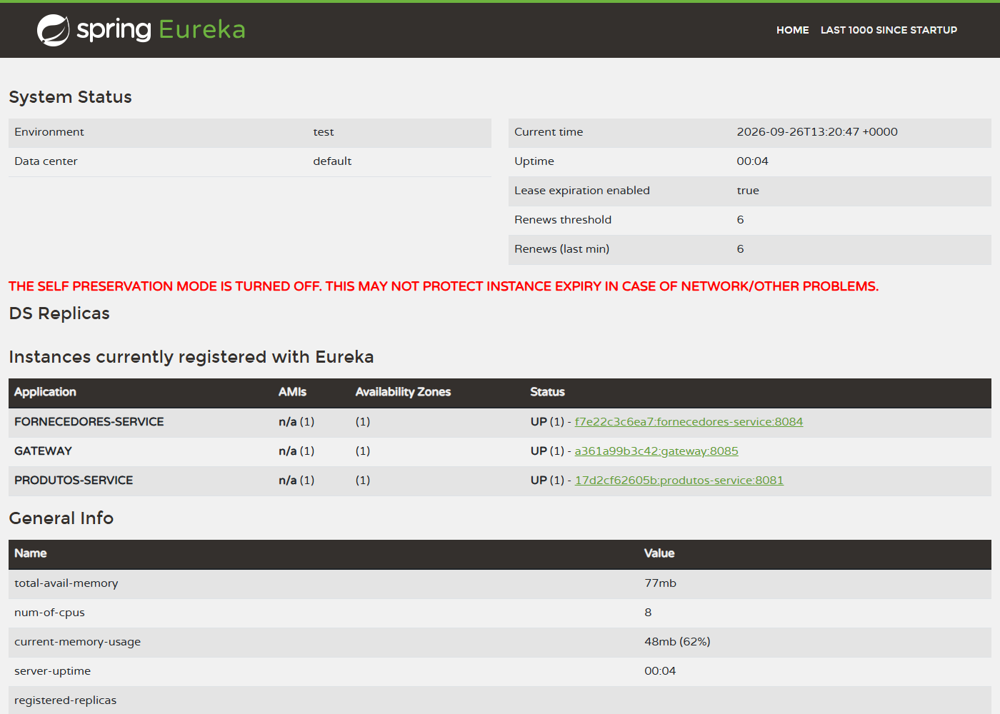
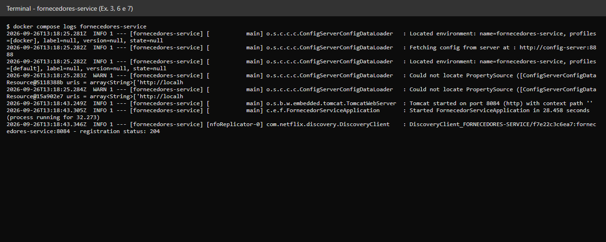
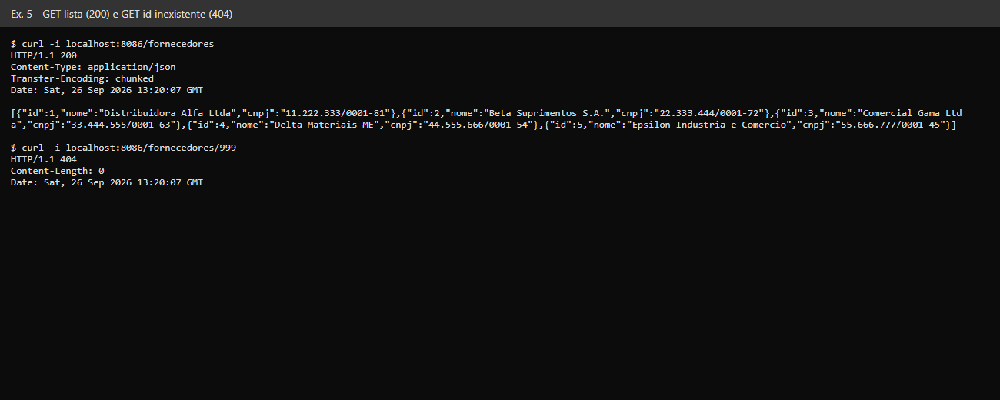
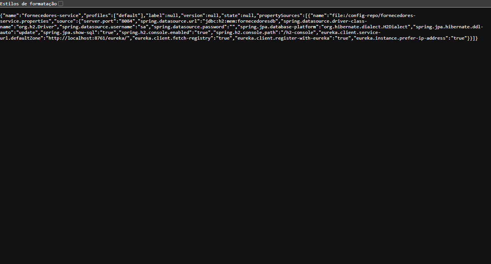
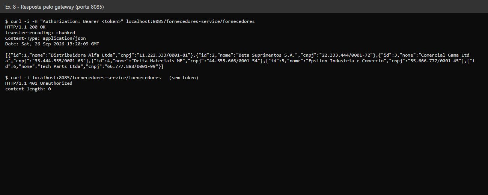
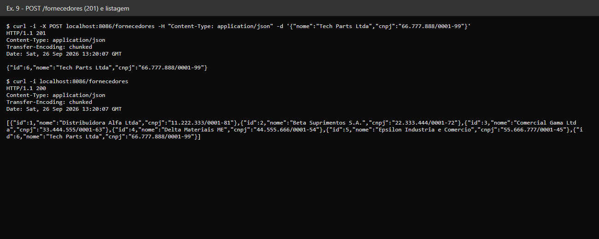
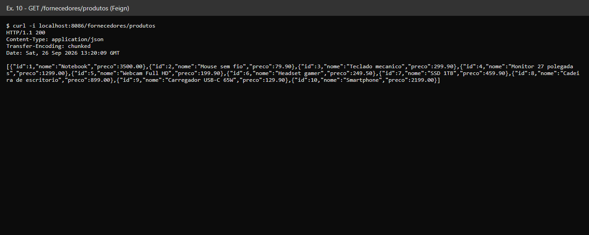
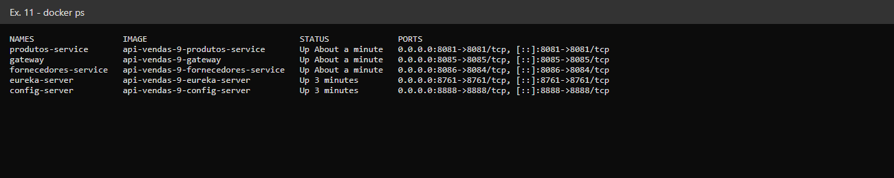

Serviço: fornecedores-service (porta 8084). Repositório: cole o link do seu fork aqui
Painel do Eureka (localhost:8761). Aqui também aparecem gateway e fornecedores porque tudo estava no ar.

Cole aqui o print da tela do Pull Request (branch atividade-seunome → main do seu fork).
Log de subida: Tomcat na porta 8084 e Started FornecedorServiceApplication.

Cole aqui o print de http://localhost:8084/h2-console (JDBC URL jdbc:h2:mem:fornecedoresdb, user sa) com SELECT * FROM FORNECEDOR.

Resposta de localhost:8888/fornecedores-service/default e log com a porta 8084 vinda do Config Server (Located environment: name=fornecedores-service).

O gateway exige JWT, por isso o header Authorization; sem token responde 401.



docker compose up --build. O fornecedores-service publica 8086:8084 no host (a 8084 é do auth-service).

Cole aqui o print da aba Actions com o check verde, depois do seu push.